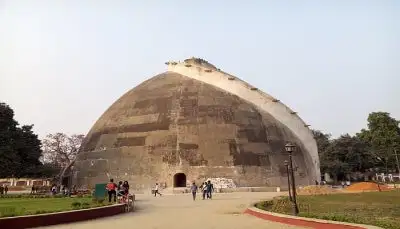
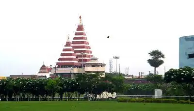

Holding the rich history of India, Patna was founded in the 5th century BC and was named
Patiliputra back then.
Adorned by the marvellous ruins, this modern city is more than just a city.
Evoked by the recent wave of development and industrialization, the city
reflects a beautiful amalgamation of modern and past glory.
|  |  |
The history and tradition of Patna go back to the earliest dawn of civilization. The original name of Patna was Pataliputra or Patalipattan and its history makes a start from the century 600 B.C. The name Patna has undergone many changes at its earliest stages like Pataligram, Kusumpur, Patliputra, Azimabad etc., ultimately terminating to the present one. Chandragupta Maurya made it his capital in the 4th century B.C. Thereafter the city lost its importance until Sherkhan Suri rose into power in the early 16th century A.D. Another version that comes to focus is that there existed a village named Pattan or Patthan, which later turned into Patna.It has been said that Pataliputra was founded by Ajatashatru. Patna, therefore, has become inextricably bound up with the ancient Pataliputra. The ancient village was named ‘Patali’ and the word ‘Pattan’ was added to it. Greek history mentions ‘Palibothra’ which perhaps is Pataliputra itself.
{kind=link}